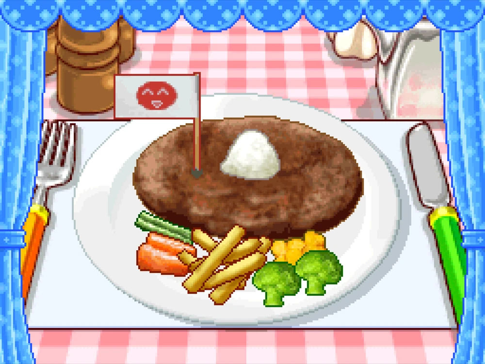

Libro 1: Recetas de carne de res
Saga original
-

10 pasos
Salisbury Steak
Un trozo de carne picada cocinada en una sartén con salsa y servido con varias verduras.
-

10 pasos
Japanese Hamburg Steak
Trozo de carne picada sazonada cocinada al estilo japonés sin pan.
-
7 pasos
Estofado de carne de res
Guiso tradicional de cocción lenta donde la carne de res se cocina en su jugo.
-
7 pasos
Filete japonés
Filete de carne de res japonesa con grandes cantidades de grasa veteada.